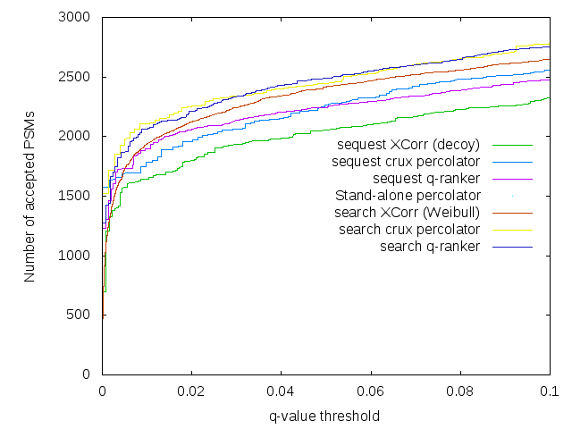
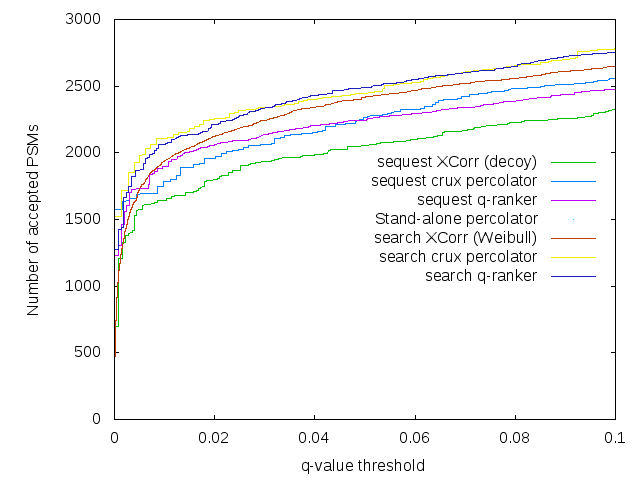

|  |  |
This test checks how well the Crux search tools work on a sample data
set. The data set consists of 7243 spectra, of which 160 are 1+, 7083
are 2+ and 7055 are 3+. Thus, there are a total of 14298 searches to
be performed. The database is comprised of 23,932 proteins and 10.5
million amino acids, including C. elegans proteins plus some
common contaminants. The test runs crux
search-for-matches and crux sequest-search using a
3.0 Da precursor mass window, shuffled decoys and a fully tryptic
digest. The searches are followed up by analysis via crux
compute-q-values, crux percolator, crux
q-ranker and, if it is installed, the stand-alone version of
Percolator. The performance of each method is summarized as a plot
showing the number of spectra identified as a function of q-value
threshold.
You can execute the test by running the
script run-performance-test.sh in this directory or the
command make performance-test in the parent directory.
Assuming that you have gnuplot installed, then the resulting picture
should show up in the right-hand panel below:
|  | |
The plot contains the following series:
crux percolator q-values based on sequest-search
resultscrux percolator q-values based on search-for-matches
resultsq-ranker q-values based on sequest-search resultsq-ranker q-values based on search-for-matches resultsHere are some things to look for in the output:
compute-q-values.search-for-matches
and sequest-search should be very similar.
WSN
9 June 2010